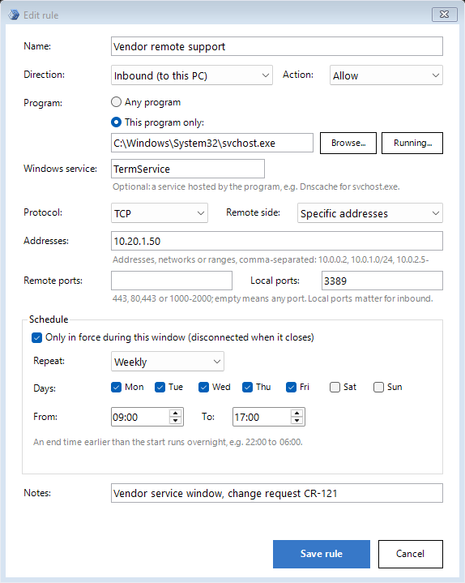

Home/Features
Everything CSVCOP does, module by module
Two modules on one workstation. 21 CFR Part 11 Controls: an application that decides the configuration, a service that keeps it true and an agent in every session for what policy cannot reach. Micro-segmentation: a network policy that decides which programs may talk to which machines, held in the firewall built into Windows.
The configuration you applied is the configuration the machine has. Always.
The CSVCOP Watchdog is a Windows service running as SYSTEM. It compares the live state of every applied control with the encrypted master, and puts back whatever differs.
Runs as SYSTEM, before sign-in
Starts with Windows, ahead of the sign-in screen. If it is ever stopped, Windows restarts it after 5, 10 and 30 seconds.
30-second compliance check
Registry policy, security policy and user rights are read live, on the machine and in every user profile, and compared with the master.
Automatic restore
Anything that differs is put back, and the difference is recorded as a tamper event with the value found and the value restored.
Knows your changes from tampering
The application stamps each save with a version. Only a difference with an unchanged version is treated as tampering.
Self-protecting master
If the encrypted master is deleted or corrupted, it is restored from a protected backup on the next cycle — and the deletion is logged.
Heartbeat
A dated line every cycle, so “is it running?” is a question with a documented answer.
 CSVCOP
CSVCOP Click to enlarge
Click to enlargeCopy, cut, paste, delete, rename and drag — refused where policy cannot reach
Buttons move, menus change, Windows gets redesigned. Every route to copying, renaming or deleting ends at the same few places, and that is where the CSVCOP agent stands — so it behaves the same on every toolbar layout and in every Windows language.
Keys
Ctrl+C, Ctrl+X, Ctrl+V, Ctrl+Insert, Shift+Insert, Delete, Shift+Delete, F2, Ctrl+Z and Ctrl+Y — in File Explorer only, or in every program. Backspace still works, so typing is unaffected.
The clipboard itself
Anything placed on it — files, text, images — is wiped the instant it lands, whether it came from a key, a menu or a script. Paste finds nothing.
Toolbar buttons
Cut, Copy, Paste, Rename, Delete, Move to and Copy to are recognised on the Windows 11 command bar and on the classic ribbon; the click never reaches Explorer.
Drag and drop
The distance the pointer must travel before Windows starts a drag is raised beyond any screen, so a drag can never begin.
Rename, by every route
The rename box is closed the instant it opens — F2, the button, either right-click menu, or the slow second click on a name. The name never changes.
Delete, undone
A file sent to the Recycle Bin is moved straight back in milliseconds, and the attempt is logged with the file's path. Permanent-delete confirmations are refused.
Nothing, read-only, or exactly these devices
Removable-storage control the way your SOP words it — controls 60–64 and 86, plus a per-device whitelist.
Deny everything
All removable storage classes refused; a stick simply does not open.
Deny writing only
Files on a stick can be read; nothing can be copied onto it.
Portable devices
Phones and cameras are controlled separately from disks, for reading and for writing.
Per-device whitelist
The USB Control screen recognises a plugged-in device by its hardware identity and allows that exact device, while everything else stays blocked.
CSVCOP Click to enlarge
Click to enlargeThe people who configure the lockdown are held to the same standard
CSVCOP has its own accounts, separate from Windows, for the administrators who decide the configuration.
Roles
A built-in root account for user management and password resets; administrator accounts for configuring controls.
Passwords
Stored as salted PBKDF2 hashes, never in clear; a complexity policy; a forced change on first sign-in and after every reset.
Brute-force protection
Sign-in attempts are rate-limited, and the account is cooled down after repeated failures.
Idle timeout
The application signs out after 20 minutes without input, measured across the whole desktop.
Re-authentication
Save & Apply asks for the password again, so a walk-away screen cannot be used to change the lockdown.
No limit on people
A licence covers the workstation, not a number of people: add the administrators you need, each with an account of their own in the audit trail.
Who changed what, when — and who tried to
Compliance is evidence. CSVCOP writes three kinds of record, protects all of them, and prints them for the validation file. Switching a control off asks for the reason, and the reason is part of the record.
Application log
Every sign-in and sign-out, every control switched on or off, every user added, activated, deactivated or reset, every licence event — with the account that did it.
Security log
Tamper events found and reversed by the service, blocked attempts reported by the session agent, and licence state changes.
Windows Event Log
Tamper events mirrored to the Application log under the CsvCopWatchdog source, where your central log collection already looks.
Seven reports to PDF
User Activity Log, Control Change History, USB Whitelist Activity, the Audit Trail, and summaries of the controls, users and USB whitelist — with your logo and the Equipment ID.
Protected storage
Masters encrypted with machine-bound DPAPI; log and master folders writable only by SYSTEM and administrators; automatic backups.
Independent of the operator
Blocked attempts are recorded with the user, the action, the window and the file — by the service, not by the person who tried.
CSVCOP Click to enlarge
Click to enlargeAll 97 controls
Every control is switched on or off individually, described in plain language inside the application, applied to every user of the machine and held in place by the watchdog. The numbers match the application, so an auditor's checklist can cite them directly.
Passwords & accounts 6 controls
Windows account policy for every user of the machine: how long passwords live, how strong they must be, and that every account has one.
- 1Enforce password history
- 2Maximum password age
- 3Minimum password age
- 4Minimum password length
- 5Password must meet complexity requirements
- 6Windows user account password (local / domain controlled)
Lockout, sign-in & auditing 6 controls
What happens after wrong passwords, what the sign-in screen reveals, and which security events Windows records.
- 68Interactive logon: do not display last user name
- 79Account lockout duration
- 80Account lockout threshold
- 81Reset account lockout counter after
- 82Audit account logon events (success, failure)
- 83Audit policy change (success, failure)
Start menu, taskbar & history 35 controls
Strip the shell down to what an operator needs. Everything that lets a user wander, reconfigure or leave traces can be removed.
- 20Clear history of recently opened documents on exit
- 21Clear the recent programs list for new users
- 22Remove and prevent access to the Shut down, Restart, Sleep and Hibernate commands
- 23Remove common program groups from Start menu
- 24Remove Favorites menu from Start menu
- 25Remove Search link from Start menu
- 26Remove frequent programs list from the Start menu
- 27Remove Games link from Start menu
- 28Remove Help menu from Start menu
- 29Remove All Programs list from the Start menu
- 30Remove Network Connections from Start menu
- 31Remove pinned programs list from the Start menu
- 32Do not keep history of recently opened documents
- 33Remove Recent items menu from Start menu
- 35Remove Default Programs link from the Start menu
- 36Remove Documents icon from Start menu
- 37Remove Music icon from Start menu
- 38Remove Pictures icon from Start menu
- 39Remove Search Computer link
- 40Do not search programs and Control Panel items
- 41Remove programs on Settings menu
- 42Prevent changes to Taskbar and Start menu settings
- 43Remove Homegroup link from Start menu
- 44Remove access to the context menus for the taskbar
- 45Hide the notification area
- 46Remove links and access to Windows Update
- 47Do not search the internet
- 48Remove Downloads link from Start menu
- 49Remove Recorded TV link from Start menu
- 50Remove Videos link from Start menu
- 51Remove the Action Center icon
- 52Turn off feature advertisement balloon notifications
- 53Lock all taskbar settings
- 54Prevent users from rearranging toolbars
- 55Remove pinned programs from the taskbar
Run, command prompt & system tools 11 controls
The doors an operator could use to get around the shell: Run, the command prompt, PowerShell and named programs, Task Manager, Control Panel, Registry Editor.
- 8Disable shortcut keys in the keyboard
- 9Remove Add or Remove Programs access
- 10Hide the Set Program Access and Defaults page
- 34Remove Run menu from Start menu
- 56Prevent access to the command prompt
- 57Don't run specified Windows applications
- 59Remove Task Manager
- 71Turn off Windows + X hotkeys
- 84Control Panel access
- 85Taskbar access
- 92Disable Registry Editor
Desktop & screen saver 5 controls
A tidy, predictable desktop and an enforced screen saver with its timeout.
- 11Enable screen saver
- 12Prevent changing desktop icons
- 13Remove Computer icon on the desktop
- 14Remove Recycle Bin icon from desktop
- 15Screen saver timeout
File Explorer, search & drives 12 controls
Restrict what Explorer shows and allows: drives, network drives, context menus, the Security tab, search.
- 7Prohibit access / cut, copy, paste, delete, rename or disable right-click
- 65Turn off display of recent search entries in the Explorer search box
- 66Turn off the display of snippets in Content view mode
- 69Remove “see more results / search everywhere” link
- 70Do not search for files
- 75Hide the Manage item on the Explorer context menu
- 76Remove Security tab
- 77Remove search button from Explorer
- 78Remove Explorer's default context menu
- 89Remove Map Network Drive and Disconnect Network Drive
- 90Hide drives in File Explorer
- 91Prevent access to drives in File Explorer
Removable storage & devices 6 controls
Deny removable disks and portable devices, or deny only writing, and whitelist the exact devices your instruments need.
- 60Removable disks: deny read access
- 61Removable disks: deny write access
- 62All removable storage classes: deny all access
- 63Windows portable devices: deny read access
- 64Windows portable devices: deny write access
- 86External storage devices connectivity
Network 5 controls
Lock the connection settings an operator should never touch.
- 16Prohibit TCP/IP advanced configuration
- 17Prohibit enabling / disabling components of a LAN connection
- 18Prohibit enabling / disabling a LAN connection
- 19Prohibit access to properties of components of a remote access connection
- 88Network access settings
Windows Update 2 controls
Keep update behaviour under the administrator's control, not the operator's.
- 58Windows automatic updates
- 72Remove access to use all Windows Update features
Time, system rights & shutdown 5 controls
The user rights behind time changes, time zone, the pagefile and shutting down: withheld from standard users, kept for administrators.
- 67Prohibit changing the system time
- 73Change the time zone
- 74Create a pagefile
- 87Date & time change
- 93Remove standard users' right to shut down the system
Session guard (the CSVCOP agent) 4 controls
Controls Windows policy cannot express: the keys, toolbar buttons, drag, clipboard, rename box and Recycle Bin, enforced by the CSVCOP session agent in every signed-in session.
- 94Block copy, cut, paste, delete and rename keys in File Explorer
- 95Block copying and moving files by dragging them
- 96Block copy, cut, paste, delete and rename keys in every program, and block rename by every route in File Explorer
- 97Block all copy and paste everywhere by clearing the clipboard (files and text)
Side effects are part of the description, not a surprise
A control that blocks something useful says so before it is switched on. Three examples from the catalogue:
95 · Block dragging
Raising the drag distance also stops drawing a selection box around several files. Clicking and Ctrl-clicking to select still work.
96 · Block the edit keys everywhere
Copy and paste stop inside the operator's own software too. Backspace still deletes text. New folders keep their default names, since naming one is a rename.
90 / 91 · Hide and block drives
Every drive except C: disappears for every account, including administrators. Apply it last, from a session that does not need those drives.
Isolate the PC, limit the internet, or both
Two switches decide what the workstation may reach. Everything a rule does not allow is refused, and the refusal is written down.
Isolate from the local network
The PC stops talking to the other PCs, shares, printers and servers on its network, except what a rule allows. The internet stays open unless the next switch is on as well.
Refuse incoming connections too
Connections other machines open to this PC are refused as well, except what an inbound rule allows — Remote Desktop from an administrator’s PC, say.
Internet for named programs only
Every connection to the internet is refused unless a rule allows the program. An unknown program, or a known one under a new name, is refused the moment it tries.
CSVCOP Click to enlarge
Click to enlargeRules made from what the PC really does
Before anything is restricted, learning mode records every connection the PC makes. The Observed traffic list shows it, and turns any line into a rule.
CSVCOP Click to enlarge
Click to enlargeEvery connection, counted
Program, direction, address, port and protocol, how many times and when last — allowed and blocked side by side.
One click to a rule
Allow this, Allow program to internet or Allow all to this host: the line becomes a rule, ready to review.
The view you need
Blocked only, allowed only or everything; today, the last 7 days or the last 30. Sorted by any column.
Rules in plain words
A rule allows or blocks one kind of connection. It reads like a sentence, and the Rules page says for each one whether it is in force right now.
By program, address, port, protocol
Allow or block, outbound or inbound, for one program or Windows service or any program; to an address, a network, a range, the local network or the internet; TCP, UDP or ICMP.
On a schedule
Daily, weekly or monthly windows. Outside its window a rule is “Not now” and the connection is cut when the window closes; an end before the start runs overnight.
In force: Yes, Idle or Not now
A block rule works on its own. An allow rule opens what it names once a restriction is on; until then it is Idle, and the page says so.
Nine presets for the usual cases
- Web browsing for a program
- A program’s internet access
- File share on a server
- Remote Desktop to a host
- SQL Server on a host
- Printing to a printer
- Ping a host
- Everything to one host
- Remote Desktop from an administrator’s PC
CSVCOP
Click to enlargeCSVCOP Click to enlarge
Click to enlargeWindows keeps working under every restriction
What Windows itself needs stays open while a restriction is on, each one a switch of its own. The local network is the PC’s own subnets plus the networks you add.
- DHCPgetting an address
- DNSname lookup
- Time synchronisationthe Windows Time service, UDP 123
- Windows Update and Microsoft servicesupdates, activation, Defender
- Windows built-in appsthe firewall rules Windows made for its own apps
- PingICMP echo, for diagnostics
- Domain servicessign-in, group policy and the like, on a domain-joined PC
CSVCOP Click to enlarge
Click to enlargeA wrong rule cannot cut the workstation off for long
Tightening the policy is the change that can stop a PC working, so CSVCOP shows what it will break first, and takes it back by itself unless someone commits it.
What will stop working
Before a tightening change is applied, the connections seen in the last 7 days that will start failing are listed.
Remote sessions warned
When the session looks remote — Remote Desktop, or AnyDesk, TeamViewer or VNC running — CSVCOP warns before the PC is cut off.
Five minutes to commit
The change is in force at once but not yet permanent: unless it is committed within five minutes, the previous policy comes back by itself.
Password, and a reason
Save & Apply asks for the password. A change that loosens the policy — a mode off, an allow added, an allowance on — asks for a reason as well.
The firewall stays the way the policy says
The policy is written as Windows Firewall rules and held there by the same watchdog that holds the controls, on the same 30-second cycle.
Drift put back
A CSVCOP rule disabled or deleted outside CSVCOP, or a firewall profile set back to allow, is restored on the next cycle.
Foreign rules switched off
An allow rule that appears, or is switched back on, outside CSVCOP while a restriction is on is disabled again.
Logged as tampering
Each correction is written down: “Network Tamper” for a rule CSVCOP had already disabled once, “Network Policy” for a new one.
Every refusal on record
Two reports of its own, in the same audit trail as every other change, and a click from PDF like the rest.
CSVCOP Click to enlarge
Click to enlarge- Micro-segmentation Activity: every policy change, rule change and refused connection
- Micro-segmentation Policy: the rules in force, like the USB whitelist summary
Activation for machines that are never on the internet
The workstation shows a machine key. The licensing portal signs a licence for that machine, those dates and the modules it has. The workstation checks the signature, the machine and the dates entirely on its own.
Machine key
A one-way hash of hardware identifiers. It identifies the PC, reveals nothing about it, and survives a Windows re-install.
Signed and machine-bound
An RSA-2048 signature the workstation can check but never create. A licence for another PC is refused with the reason; change one character and the signature no longer matches.
The modules, in the key
21 CFR Part 11 Controls in every key; Micro-segmentation in the keys of the PCs it was ordered for — every PC, or a set number of them.
30-day warning
The application and the dashboard warn from 30 days before the end date. Renew by pasting a new licence over the old one.
Fourteen days of grace
After the end date everything keeps working for 14 days, with a daily warning. Then the controls and the network policy switch off until a renewed licence is pasted; the configuration is kept and comes back by itself.
Clock-aware
The service records the latest time seen. A clock set back more than a day is reported, and locks changes until corrected.
Which of these does your checklist need?
Send us the checklist and the list of machines your PCs must reach. We will return it with the control numbers and the rules filled in.